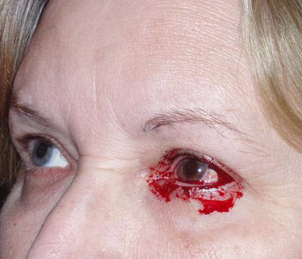

LASIK surgery 5/11/2009:
"During the 2-hour comprehensive exam, I was shown a movie, my eyes were dilated, went though more visual tests, and the doctor confirmed I was a good candidate and my eyes were in excellent condition for the procedure. The last test was to rescan my corneas so the InterLase would have a current corneal map to remove the correct amount of tissue. For some reason the WaveScan wouldn’t work on my left eye and the nurse asked the doctor if he could use the scan created during my April 15th visit. He said it was okay to use the older scan. Why didn't it work and could this be the reason I'm having visual problems with the left eye? In November, frustration pushed me to a second opinion. I recreated how I see the world and gave the doctor the photographs and asked him to help me. (http://www.lasikvictims.com/Images/photos.pdf) The first thing I learned was that my original prescription was a difficult one to correct should NOT have been a candidate for Lasik. Secondly, since I had mild cataracts that was also an issue in the correction. One part of the exam was a high-resolution image analysis to evaluate the corneal surface. This scan indicated there were irregularities through my line of vision that would account for the “explosion of seeing multiple images.” He suggested I try contacts to smooth out my corneal surface. I met with another doctor in the practice to try a plain, no correction lens. PRAISE THE LORD! I’m only seeing double and triple images instead of SIX. Contacts were a big improvement! Unfortunately, they suck the moisture from my eyes and given I have problems with dry eyes after Lasik, I now have another problem. Two weeks ago, my eyes suddenly begin to tear and the left eye fills with blood which leaves me virtually blind until it stops. See (http://www.lasikvictims.com/Images/photo-eye.pdf ). This happened at work 3 times, driving home twice, in the checkout line at the supermarket once and 4 times at home. I saw a third ophthalmologist about the bleeding and he sent me to a fourth doctor. The forth specialist determined that the contacts created a lesion/blood blister on the underside of my eyelid that would spontaneously break. After a few days, it would fill up with blood and break again. He shaved and cauterized the lesion and I haven't had an incident in a month. On a follow up visit to the third specialist I saw, who happened to be a Lasik specialist for the Richmond group, I asked him if he could fix my left eye. He said he would NOT attempt it and will recommend a corneal specialist to see if a "transplant" might solve the problem. I've talked to several lawyers and they won't take my case. Somehow I have to STOP the Corneal Mutilations of innocent trusting people."